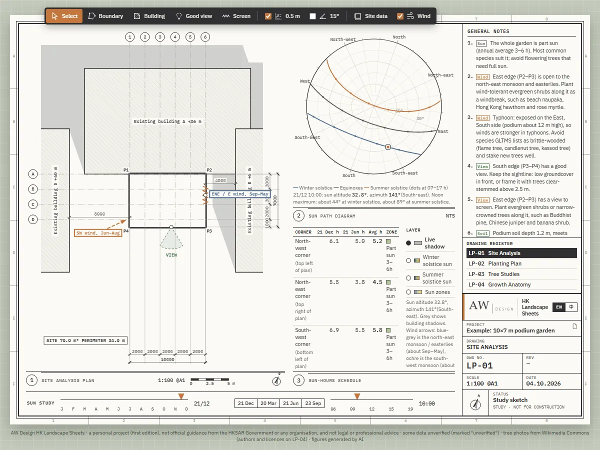
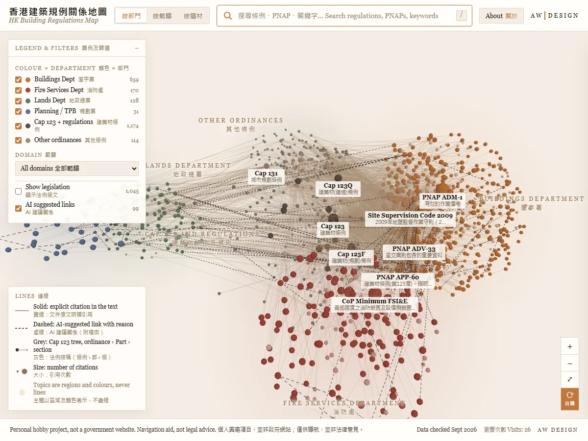
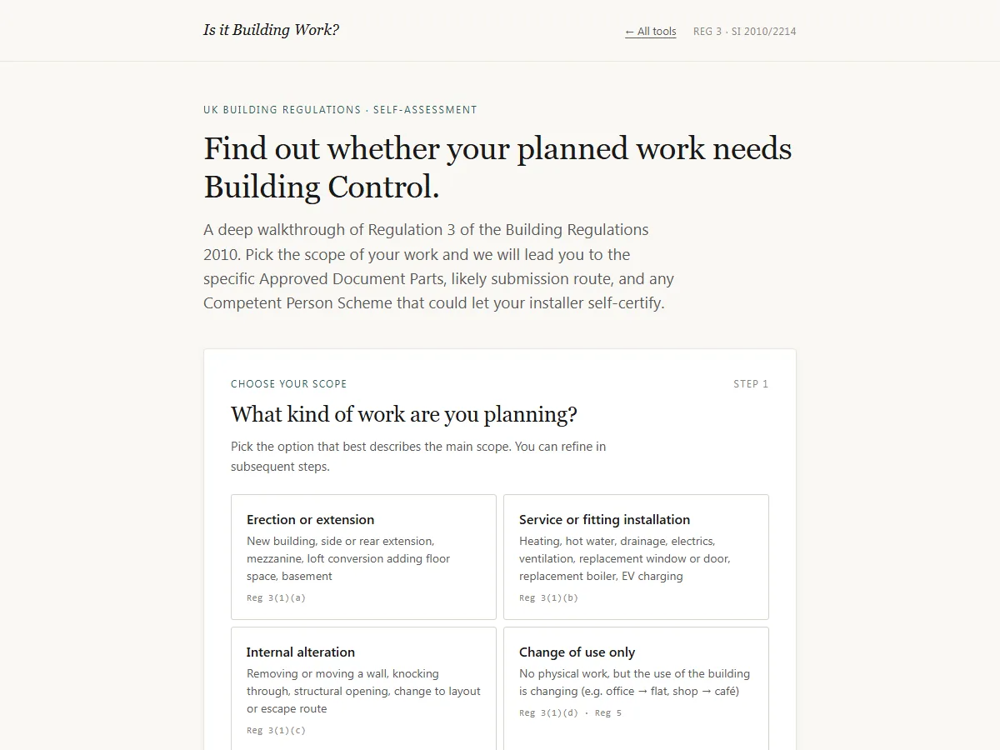
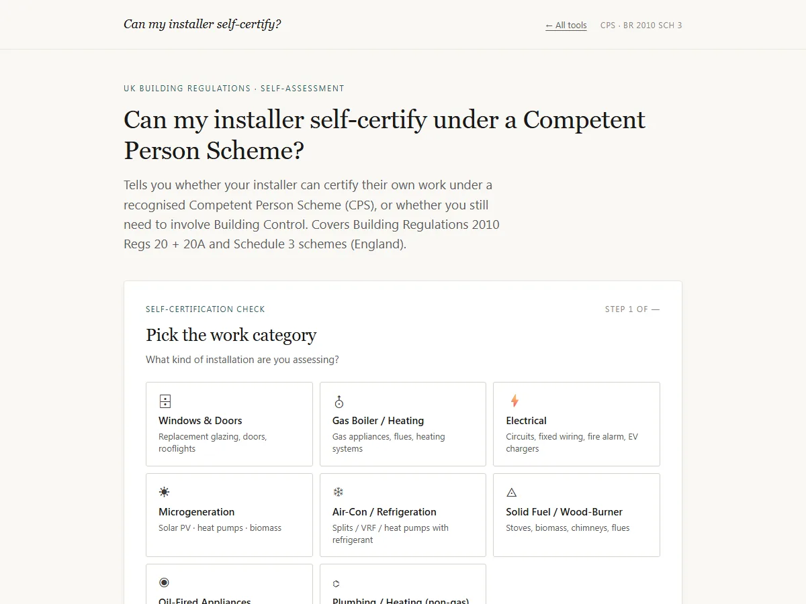
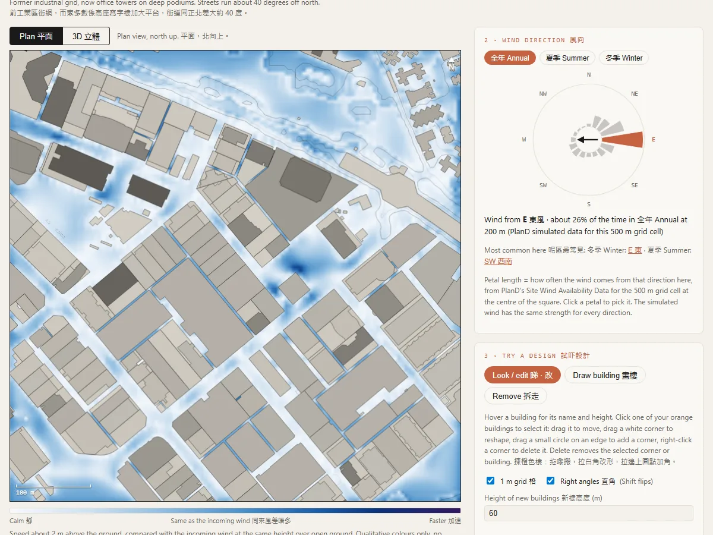

Lab實驗室
Free tools I build in my own time, mostly about regulations and early design. Each one helps you ask the right question. None of them replaces a professional answer.
我在業餘時間製作的免費工具，大多關於建築規例及早期設計。每個工具都能幫你問對問題，但沒有一個可以取代專業意見。

T01HK Landscape Sheets香港園境圖則香港園境圖則HK Landscape Sheets
Draw a podium garden and get a set of A1 landscape sheets: site analysis, planting plan, tree schedule and growth studies.
繪畫一個平台花園，即可得到一套 A1 園境圖則：地盤分析、種植平面、樹種表及生長研究。
Personal hobby project, first version. Not official guidance and not legal or professional advice.
個人興趣作品（第一版），並非官方指引，亦非法律或專業意見。

T02HK Building Regulations Map香港建築規例關係地圖香港建築規例關係地圖HK Building Regulations Map
A 3D bilingual map of Hong Kong building control documents and the links between them: ordinance, regulations, practice notes, codes and guidance.
以立體雙語地圖展示香港建築管制文件及其相互關係：條例、規例、作業備考、守則及指引。
Personal hobby project, not a government website. Navigation aid, not legal advice.
個人興趣項目，並非政府網站；僅供導航，並非法律意見。

T03Is it Building Work? Reg 3 Checker是否屬建築工程？Reg 3 檢查器是否屬建築工程？Reg 3 檢查器Is it Building Work? Reg 3 Checker
A step-by-step check against Regulation 3 of the Building Regulations 2010: does the planned work need Building Control, and which Approved Documents apply.
按《2010 年建築規例》第 3 條逐步檢查：計劃中的工程是否需要建築管制審批，以及適用哪些核准文件。
General guidance, not legal advice. The final decision rests with the Building Control Body.
一般指引，並非法律意見。最終決定權在建築管制機構。

T04CPS CheckerCPS 自我認證檢查器CPS 自我認證檢查器CPS Checker
Can your installer self-certify the work under a Competent Person Scheme, or do you need Building Control?
你的安裝商能否透過「合資格人士計劃」自我認證工程，還是需要申請建築管制？
Indicative only, not legal advice. Scheme scope can change; check the official register.
僅供參考，並非法律意見。計劃範圍可能改變，請查閱官方登記冊。

T05HK Wind Sketch香港風環境草圖香港風環境草圖HK Wind Sketch
Pick a Hong Kong area and a wind direction, drag in a building, and watch a qualitative 2D wind field react at pedestrian level. Runs in the browser.
選一個香港地區及風向，拖入一座建築，即可看到行人高度的二維風場如何變化。全部在瀏覽器內運行。
A qualitative 2D sketch for teaching and early design feel. Not an Air Ventilation Assessment: no velocity ratio figures, no pass or fail.
供教學及早期設計參考的定性二維草圖。並非空氣流通評估：沒有風速比數字，亦無合格與否之分。